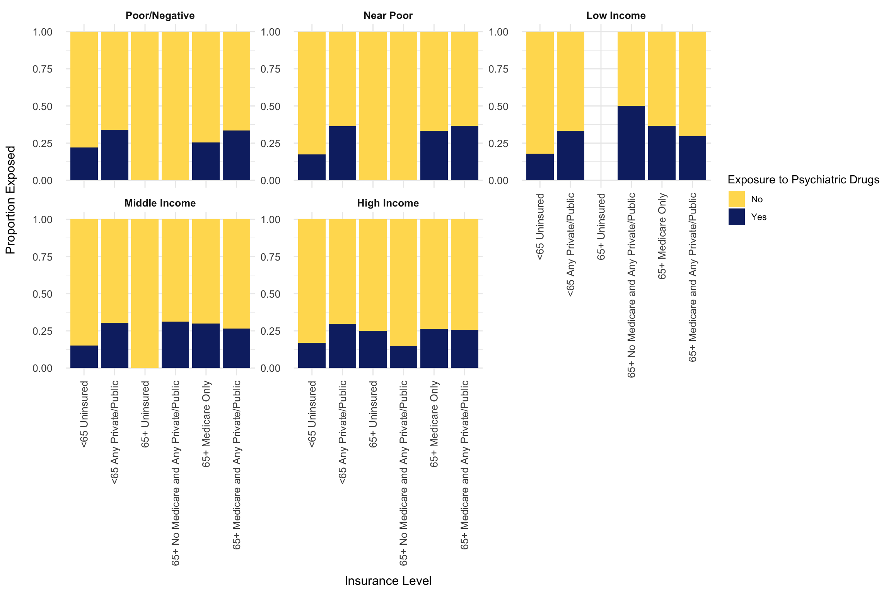
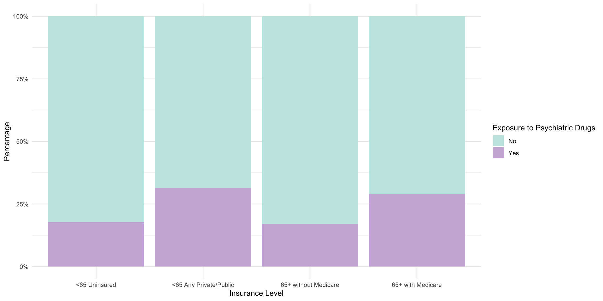
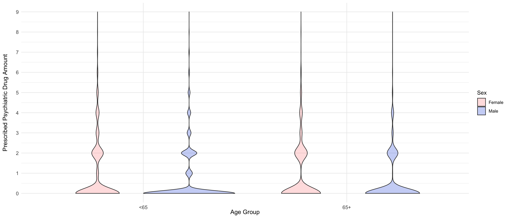
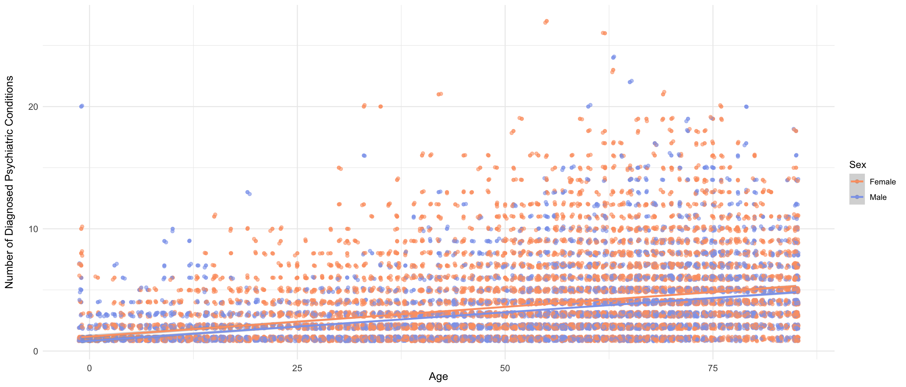

| Variable | No Exposure (%) | Exposed (%) |
|---|---|---|
| Age | ||
| Age (Mean ± SD) | 50.73 (±23.29) | 51.74 (±20.56) |
| Sex | ||
| Male (%) | 45.84% | 35.44% |
| Female (%) | 54.16% | 64.56% |
| Race/Ethnicity | ||
| Hispanic (%) | 17.49% | 11% |
| Non-Hispanic White (%) | 58.31% | 74.56% |
| Non-Hispanic Black (%) | 15.38% | 9.51% |
| Non-Hispanic Asian (%) | 5.3% | 1.92% |
| Non-Hispanic Other/Multiple (%) | 0% | 0% |
| Income Level | ||
| Poor/Negative (%) | 15.52% | 17.35% |
| Near Poor (%) | 4.43% | 5.55% |
| Low Income (%) | 12.93% | 14.44% |
| Middle Income (%) | 27.15% | 26.03% |
| High Income (%) | 39.97% | 36.64% |
Insurance Coverage and Psychiatric Drug Exposure
Abstract
This is my abstract.
Keywords
MEPS, Medical Expenditure Panel Survey, Mental Health, Poverty, Prescribed Medicine, Psychiatric Drug, Drug Expenditure
1 Introduction
Mental health disorders pose a significant global challenge, with more than half of individuals suffering from mental illnesses lacking access to proper care (PATEL et al. 2010). This treatment gap is widespread across nations but disproportionately affects individuals in lower-income brackets. The relationship between poverty, mental health, and social risks including stress, stigma, and unemployment has been extensively studied, revealing a cyclical interaction in which mental illness can lead to financial hardship while economic instability exacerbates psychiatric conditions (Knifton and Inglis n.d.). Marbin et al. (2022) has shown that income inequality also has been linked to heightened mental disorder problems in developed countries. Despite the heightened risk of psychiatric disorders among socioeconomically disadvantaged populations, significant barriers including financial constraints, lack of insurance, and limited healthcare access impede treatment utilization (Dong et al. 2021).
The treatment of mental disorders have increasingly geared toward reliance on psychotropic drugs, given its easier accessibility compared to in-patient care or regular office visits(Donohue and Frank 2007). One of the primary obstacles to mental healthcare access is the cost of psychiatric medications, which constitute a substantial portion of healthcare expenditures (Dong et al. 2021). The rising cost of psychotropic drugs has placed an increasing financial burden on low-income families, leading to a higher prevalence of unmet healthcare needs (Sarma, Basu, and Gupta 2007). Insurance coverage plays a crucial role in mitigating these disparities, as research has shown that expanding coverage improves access to prescription medications. For example, a 2018 study in Oregon found that Medicaid coverage reduced the prevalence of untreated depression by over 60%, while increasing the use of antidepressants and other psychiatric medications (Baicker et al. 2018). Similarly, studies have found that cost-sharing declines psychotropic drug usage, even in cases where usage is necessary for patients(Fung et al. 2013). These findings underscore the importance of financial barriers in psychiatric medication adherence, highlighting the role of insurance policies in reducing disparities in mental healthcare access.
Given the critical role of insurance coverage in determining psychiatric drug access, this study examines the following research question: What is the relationship between insurance coverage and exposure to psychiatric drugs? Based on prior research, the study hypothesizes that individuals with comprehensive insurance coverage will have greater exposure to psychiatric medications compared to those with limited or no insurance.
This study utilizes data from the Medical Expenditure Panel Survey (MEPS) to investigate the association between insurance coverage and psychiatric drug exposure, obtained from the Prescribed Medicine File. The primary outcome variable, psychiatric drug exposure, is defined as a binary indicator of whether an individual was prescribed psychiatric medication, as reported by the household and confirmed by a pharmacy with individual consent. The key predictor variable, insurance coverage, is categorized into private insurance, public insurance (Medicaid, Medicare), and uninsured status. Several covariates that may influence psychiatric drug exposure are also considered, including:
Number of psychiatric diagnoses Demographic characteristics: Age, race/ethnicity, and sex Socioeconomic status: Poverty/income level.
2 Methods
2.1 Data Source
This study utilizes data from the Medical Expenditure Panel Survey (MEPS), a nationally representative survey that collects information on healthcare utilization, expenditures, and insurance coverage in the United States. Specifically, the 2022 MEPS Full-Year Consolidated File (HC 243), Medical Conditions File (HC 241), and Prescribed Medicine File (HC 239a) were used. The household component of MEPS provides person-level data, while the medical conditions and prescribed medicine files include condition- and prescription-level data, respectively. The 2022 dataset included 21,747 individuals 1. Participants included in this study were individuals aged 18 years and older.
2.2 Data Preparation
2.2.1 Variable Construction
- Psychiatric Drug Exposure: A binary outcome variable indicating whether an individual was prescribed and purchased a psychiatric drug. This was derived from the HC 239a prescribed medicine file, where only medications classified under psychiatric therapeutic classes were retained.
- Psychiatric Diagnoses: Conditions were filtered using ICD codes from the HC 241 medical conditions file, and only psychiatric conditions were retained.
- Insurance Coverage: The original MEPS insurance categories were recoded as follows:
- <65 Any Private and <65 Public Only → <65 Any Private/Public
- 65+ Medicare and Private, 65+ Medicare and Other Public Only → 65+ Medicare and Any Private/Public
- 65+ No Medicare and Any Public/Private → 65+ No Medicare and Any Private/Public Age was both left as a continuous variable and categorized as <65 years and 65+ years to align with Medicare eligibility thresholds.
- 65+ Medicare and Private, 65+ Medicare and Other Public Only → 65+ Medicare and Any Private/Public
- <65 Any Private and <65 Public Only → <65 Any Private/Public
2.3 Key Variables
- Outcome Variable: Psychiatric drug exposure (Yes/No)
- Independent Variable: Insurance coverage status, categorized as:
- <65 Uninsured
- <65 Any Private/Public
- 65+ without Medicare
- 65+ with Medicare
- Covariates:
- Age
- Sex
- Race/Ethnicity
- Income Level
2.4 Statistical Analysis
2.4.1 Descriptive Analysis
Descriptive statistics were computed for demographic and socioeconomic characteristics, stratified by psychiatric drug exposure status. Chi-square tests examined bivariate relationships between psychiatric drug exposure and key variables.
2.4.2 Logistic Regression Analysis
Separate logistic regression models were performed for each age group to assess the association between insurance coverage and psychiatric drug exposure. Odds ratios (OR) with 95% confidence intervals (CIs) were estimated. The reference groups were: - <65 Uninsured for the <65 model - 65+ without Medicare for the 65+ model
All analyses were conducted using R version 2024.12.0+467 with the tidyverse, gtsummary, knitr, kable, papaja, broom, and flextable packages.
3 Results
3.1 Descriptive Statistics
Table 1 presents descriptive statistics for the study population by psychiatric drug exposure status. Individuals exposed to psychiatric drugs were more likely to be older, female, and from higher-income groups.
3.2 Chi-Square Test Results
Variable | X. | df | p_value |
|---|---|---|---|
Sex | 123.864 | 1 | < .001 |
Race/Ethnicity | 342.069 | 4 | < .001 |
Age Group | 110.210 | 4 | < .001 |
Poverty Level | 27.338 | 4 | < .001 |
Chi-square tests indicated significant differences in psychiatric drug exposure across Sex, Race/Ethnicity, Age Group, and Poverty Level (Table 2).
The chi-square test for Sex was X²(1) = 123.864, p = < .001. This suggests a significant relationship between sex and psychiatric drug exposure. For Race/Ethnicity, was X²(4) = 342.069, p = < .001, indicating a significant association between racial identity and exposure to psychiatric drugs. For Age Group was X²(4) = 110.21, p = < .001. This suggests that psychiatric drug exposure significantly varies by age group. For Poverty Level was X²(4) = 27.338, p = < .001. This indicates a significant association between socioeconomic status and psychiatric drug exposure.
3.3 Subgroup Chi-Square Analysis
Income Level | Chi-Square / Fisher's p-value | n (Exposed to Psych Drugs) |
|---|---|---|
Poor/Negative | 0.041 | 697 |
Near Poor | 0.527 | 223 |
Low Income | 0.008 | 580 |
Middle Income | 0.010 | 1,046 |
High Income | 0.004 | 1,472 |
Subgroup analyses stratified by income level showed that the association between insurance coverage and psychiatric drug exposure remained statistically significant in all income groups except for the Near Poor category (Table 3).
For example, among individuals in the Poor/Negative category, the chi-square test indicated a significant association p = 0.041, suggesting that psychiatric drug exposure differs by insurance coverage in this income level. Similarly, in the Near Poor category, the relationship between insurance level and psychiatric drug exposure remained significant p = 0.008, reinforcing the role of insurance coverage in determining psychiatric medication access. For the Low Income group, a statistically significant association was observed p = 0.010, indicating that psychiatric drug exposure varied across different insurance statuses. Likewise, in the Middle Income category, the chi-square test remained statistically significant p = 0.004, further supporting the notion that individuals with different insurance statuses experience varying levels of access to psychiatric medication. In contrast, the High Income category did not show a statistically significant association p = 0.527, implying that insurance coverage might not play a decisive role in psychiatric drug exposure within this income level.
3.4 Logistic Regression Results
3.4.1 <65 Population
Insurance Level | OR | 95% CI (Lower) | 95% CI (Upper) | p-value |
|---|---|---|---|---|
<65 Uninsured | 1.00 | — | — | — |
<65 Any Private/Public | 2.10 | 1.607 | 2.796 | < .001 |
Table 4 presents logistic regression results for the under 65 population. The odds of psychiatric drug exposure for individuals with <65 Any Private/Public are 2.10 times that of the reference group, with a 95% CI of (1.61, 2.80) and p = < .001.
3.4.2 65+ Population
Insurance Level | OR | 95% CI (Lower) | 95% CI (Upper) | p-value |
|---|---|---|---|---|
65+ without Medicare | 1.00 | — | — | — |
65+ with Medicare | 1.972 | 1.119 | 3.757 | 0.027 |
(Intercept) | 0.206 | 0.109 | 0.362 | < .001 |
Table 5 presents logistic regression results for the 65 over population. The odds of psychiatric drug exposure for individuals with 65+ with Medicare are 1.97 times that of the reference group, with a 95% CI of (1.12, 3.76) and p = .027..
3.5 Psychiatric Drug Exposure by Insurance Level

Figure 1 visualizes psychiatric drug exposure proportions by insurance level and income group.
Individuals with private/public insurance consistently had higher psychiatric drug exposure across all income levels except for the Near Poor group. Notably, psychiatric drug exposure was lowest among the uninsured, supporting the hypothesis that lack of insurance acts as a barrier to accessing psychiatric treatment.
3.6 Psychiatric Drug Exposure by Age Group

Figure 2 is a stacked bar plot that visualizes psychiatric drug exposure proportions by insurance level using three Insurance Level groups.
In both age groups (<65 and 65+), the proportion of individuals who have insurance have higher exposure to psychiatric drugs than those who are uninsured.
3.7 Psychiatric Drug Prescription by Age and Sex

Figure 3 illustrates the distribution of psychiatric drug prescriptions by age group and sex.
Consistent with previous findings, females appear slightly more likely than males to receive psychiatric medications. While most individuals receive 0–2 psychiatric drugs, a small subset receives a significantly higher number, indicating potential polypharmacy among certain individuals
3.8 Age and Number of Psychiatric Diagnosis

Figure 4 displays the relationship between age and number of psychiatric diagnoses.
Across all ages, psychiatric diagnoses were most frequently 0 or 1, suggesting that multiple diagnoses were uncommon in this population. The nearly flat regression line suggests that age does not strongly predict the number of psychiatric diagnoses.
References
Baicker, Katherine, Heidi L. Allen, Bill J. Wright, Sarah L. Taubman, and Amy N. Finkelstein. 2018. “The Effect of Medicaid on Management of Depression: Evidence From the Oregon Health Insurance Experiment.” The Milbank Quarterly 96 (1): 29–56. https://doi.org/10.1111/1468-0009.12311.
Dong, Xiaobei, Chi Chun Steve Tsang, Anoop Kotian, Jason Zeng, Michael Tran, and Junling Wang. 2021. “A Comparison Between the Effects of Drug Costs and Share of Family Income on Drug Costs in Determining Drug Price.” Medicine 100 (31): e26877. https://doi.org/10.1097/MD.0000000000026877.
Donohue, Julie Marie, and Richard Gabriel Frank. 2007. “Estimating Medicare Part D’s Impact on Medication Access Among Dually Eligible Beneficiaries With Mental Disorders.” Psychiatric Services 58 (10): 1285–91. https://doi.org/10.1176/ps.2007.58.10.1285.
Fung, Vicki, Mary Price, Alisa B. Busch, Mary Beth Landrum, Bruce Fireman, Andrew Nierenberg, William H. Dow, et al. 2013. “Adverse Clinical Events Among Medicare Beneficiaries Using Antipsychotic Drugs: Linking Health Insurance Benefits and Clinical Needs.” Medical Care 51 (7): 614–21. https://doi.org/10.1097/MLR.0b013e31829019c5.
Knifton, Lee, and Greig Inglis. n.d. “Poverty and Mental Health: Policy, Practice and Research Implications.” BJPsych Bulletin 44 (5): 193–96. Accessed March 10, 2025. https://doi.org/10.1192/bjb.2020.78.
Marbin, Derin, Stefan Gutwinski, Stefanie Schreiter, and Andreas Heinz. 2022. “Perspectives in Poverty and Mental Health.” Frontiers in Public Health 10 (August): 975482. https://doi.org/10.3389/fpubh.2022.975482.
“Medical Expenditure Panel Survey Household Component Sample Sizes.” n.d. https://meps.ahrq.gov/survey_comp/hc_sample_size.jsp. Accessed March 12, 2025.
PATEL, VIKRAM, MARIO MAJ, ALAN J. FLISHER, MARY J. DE SILVA, MIRJA KOSCHORKE, and MARTIN PRINCE. 2010. “Reducing the Treatment Gap for Mental Disorders: A WPA Survey.” World Psychiatry 9 (3): 169–76.
Sarma, Sisira, Kisalaya Basu, and Anil Gupta. 2007. “The Influence of Prescription Drug Insurance on Psychotropic and Non-Psychotropic Drug Utilization in Canada.” Social Science & Medicine 65 (12): 2553–65. https://doi.org/10.1016/j.socscimed.2007.07.015.